Prologue: the broom flight (Harry Potter → Pirates) 10

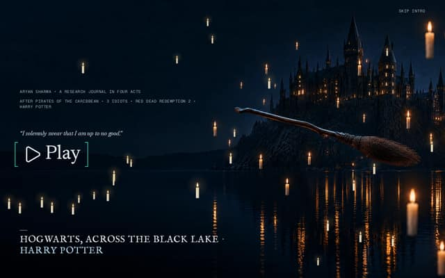
D00-intro-play
SM-1 play screen: Hogwarts, candles, broom
- J1 Harry Potter 0.95 Hogwarts at night across the Black Lake with floating candles and a broomstick
- J2 Harry Potter 0.97 Broomstick and floating candles over the Black Lake with Hogwarts
- J3 Harry Potter 0.95 Hogwarts over the Black Lake at night with floating candles and a broomstick
“Hogwarts silhouette, floating candles and a broom are unmistakable” — J1

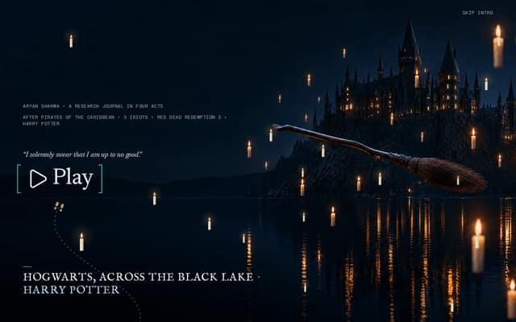
A00-intro-play
SM-1 play screen: Hogwarts, candles, broom
- J1 Harry Potter 0.95 Hogwarts at night across the Black Lake with floating candles and a broomstick
- J2 Harry Potter 0.97 Broomstick and floating candles over the Black Lake with Hogwarts
- J3 Harry Potter 0.95 Hogwarts over the Black Lake at night with floating candles and a broomstick
“Hogwarts silhouette, floating candles and a broom are unmistakable” — J1

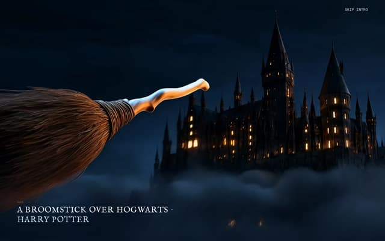
D00-intro-flight-early
SM-1 broom flight (flight-early, flight t ≈ 1.2 s); hand-off HP→Pirates
- J1 Harry Potter 0.95 Broomstick flying toward Hogwarts castle at night
- J2 Harry Potter 0.97 Broomstick flying toward lit Hogwarts castle
- J3 Harry Potter 0.95 Broomstick flying toward Hogwarts castle above clouds at night
“Broomstick and lit Hogwarts spires are unmistakable” — J1

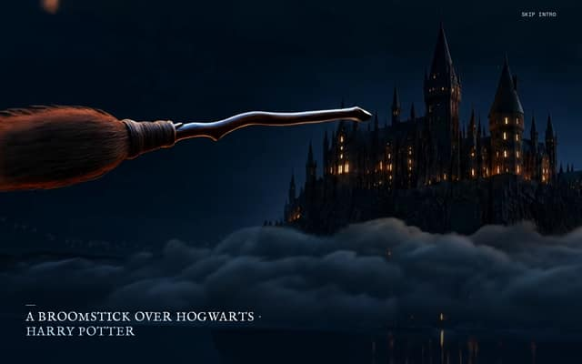
A00-intro-flight-early
SM-1 broom flight (flight-early, flight t ≈ 1.2 s); hand-off HP→Pirates
- J1 Harry Potter 0.95 Broomstick flying toward Hogwarts above the clouds
- J2 Harry Potter 0.97 Broomstick flying toward Hogwarts above clouds
- J3 Harry Potter 0.95 Broomstick flying toward Hogwarts castle above clouds at night
“Broomstick and Hogwarts spires are unmistakable” — J1

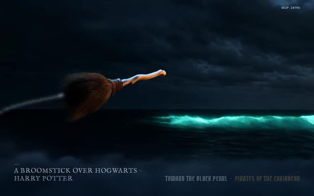
D00-intro-flight-mid
SM-1 broom flight (flight-mid, flight t ≈ 2.6 s); hand-off HP→Pirates
- J1 Harry Potter 0.60 Broomstick flying over a dark sea with a glowing wave
- J2 Harry Potter 0.50 Broomstick flying over stormy glowing sea (HP broom blended into Pirates sea)
- J3 Harry Potter 0.55 Broomstick flying over the dark sea with the glowing wave
“The broomstick is the clear subject (HP); the bioluminescent night sea is the Pirates world, so this is a mid-transition blend” — J1
Re-captured after the final test, not re-judged. Re-captured. This is the designed HP → Pirates hand-off, and both captions are on screen. It did not change.

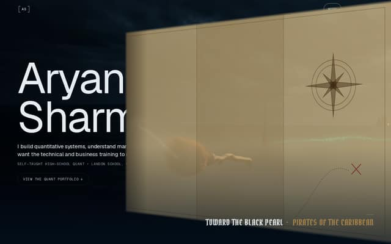
A00-intro-flight-mid
SM-1 broom flight (flight-mid, flight t ≈ 2.6 s); hand-off HP→Pirates
- J1 Pirates of the Caribbean 0.60 Night sea with glowing wave while a parchment panel swings in from the right
- J2 Pirates of the Caribbean 0.50 Glowing storm sea with parchment panel sliding in (page-turn blend)
- J3 Pirates of the Caribbean 0.50 Glowing night sea with a parchment panel swinging in from the right
“Dominant image is the Pirates sea; incoming parchment panel suggests a blend toward a map/journal world” — J1
Fixed after the final test, not re-judged. The folding page is now inked as a sea chart (compass rose, dotted course, red X).

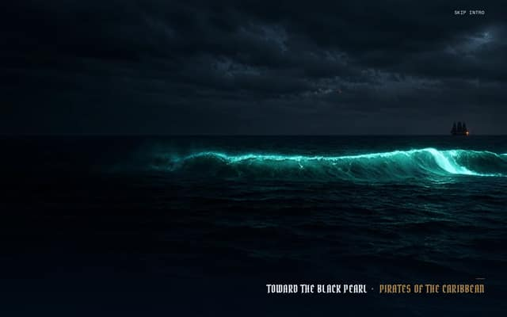
D00-intro-flight-late
SM-1 broom flight (flight-late, flight t ≈ 4 s); hand-off HP→Pirates
- J1 Pirates of the Caribbean 0.70 Night storm at sea, glowing wave, distant ship with lantern
- J2 Pirates of the Caribbean 0.60 Stormy night sea with glowing wave and distant galleon
- J3 Pirates of the Caribbean 0.60 Tall ship on the horizon of a stormy night sea with a glowing wave
“Stormy ocean with a tall-ship silhouette reads Pirates” — J1

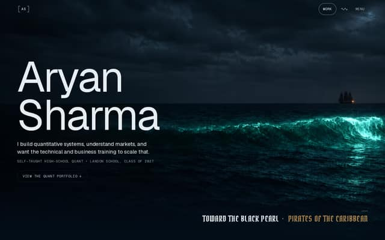
A00-intro-flight-late
SM-1 broom flight (flight-late, flight t ≈ 4 s); hand-off HP→Pirates
- J1 Pirates of the Caribbean 0.70 Night storm at sea, glowing wave, lone tall ship with lantern on horizon
- J2 Pirates of the Caribbean 0.60 Stormy night sea with glowing wave and distant galleon
- J3 Pirates of the Caribbean 0.60 Tall ship on the horizon of a stormy night sea with a glowing cursed wave
“Stormy ocean plus distant ship silhouette reads as Pirates; somewhat generic seascape” — J1

D00-intro-landed
SM-1 landing → hero (hand-off caption)
- J1 Pirates of the Caribbean 0.70 Night storm at sea, glowing wave, distant ship
- J2 Pirates of the Caribbean 0.60 Stormy night sea with glowing wave and distant galleon
- J3 Pirates of the Caribbean 0.60 Tall ship on the horizon of a stormy night sea with a glowing wave
“Stormy ocean with a tall-ship silhouette reads Pirates” — J1

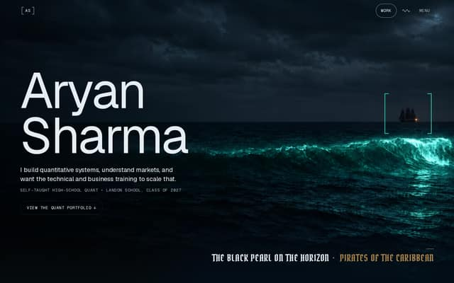
A00-intro-landed
SM-1 landing → hero (hand-off caption)
- J1 Pirates of the Caribbean 0.70 Night storm at sea, glowing wave, distant ship
- J2 Pirates of the Caribbean 0.60 Stormy night sea with glowing wave and distant galleon
- J3 Pirates of the Caribbean 0.60 Tall ship on the horizon of a stormy night sea with a glowing wave
“Stormy ocean with a tall-ship silhouette reads Pirates” — J1
Re-captured after the final test, not re-judged. Re-captured with the ALT intro fold change. The landing did not change.
Hero: the Black Pearl (Pirates) 2

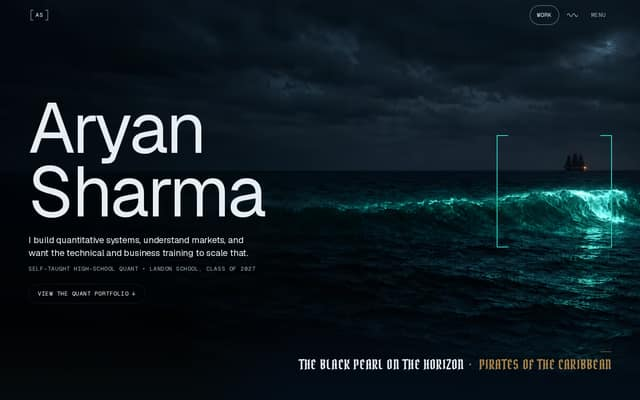
D01-hero
SM-2 hero: name at sea, the Black Pearl
- J1 Pirates of the Caribbean 0.70 Night storm at sea, glowing wave, distant ship
- J2 Pirates of the Caribbean 0.60 Stormy night sea with glowing wave and distant galleon
- J3 Pirates of the Caribbean 0.60 Tall ship on the horizon of a stormy night sea with a glowing wave
“Stormy ocean with a tall-ship silhouette reads Pirates” — J1
Re-captured after the final test, not re-judged. Re-captured after the hero code changes (fetchpriority, mobile spyglass crop). The desktop scene did not change.

A01-hero
SM-2 hero: name at sea, the Black Pearl
- J1 Pirates of the Caribbean 0.70 Night storm at sea, glowing wave, lone tall ship with lantern on horizon
- J2 Pirates of the Caribbean 0.60 Stormy night sea with glowing wave and distant galleon
- J3 Pirates of the Caribbean 0.60 Tall ship on the horizon of a stormy night sea with a glowing cursed wave
“Dark stormy ocean with a square-rigged ship silhouette reads as Pirates, though a night sea is somewhat generic” — J1
Re-captured after the final test, not re-judged. Re-captured after the hero code changes (fetchpriority, mobile spyglass crop). The desktop scene did not change.
Act I card: The Crossing (Pirates) 6

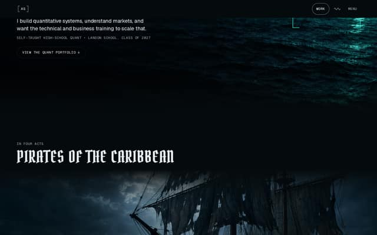
D10-act-1-enter
SM-3 opening card (Act I, Pirates) — enter
- J1 Pirates of the Caribbean 0.75 Transition from glowing night sea to Black Pearl sails
- J2 Pirates of the Caribbean 0.80 Dark sea scrolling into ghost ship with tattered sails
- J3 Pirates of the Caribbean 0.80 Scrolling from the glowing night sea down to the Black Pearl's tattered sails
“Dark teal sea and shredded black sails are Pirates” — J1

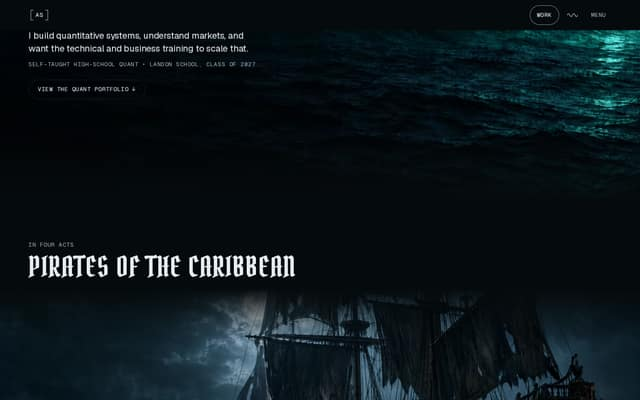
A10-act-1-enter
SM-3 opening card (Act I, Pirates) — enter
- J1 Pirates of the Caribbean 0.75 Transition from glowing night sea (top) to Black Pearl sails (bottom)
- J2 Pirates of the Caribbean 0.80 Dark sea scrolling into ghost ship with tattered sails
- J3 Pirates of the Caribbean 0.80 Scrolling from the glowing night sea down to the Black Pearl's rigging
“Both halves are Pirates imagery: dark teal sea and shredded black sails” — J1

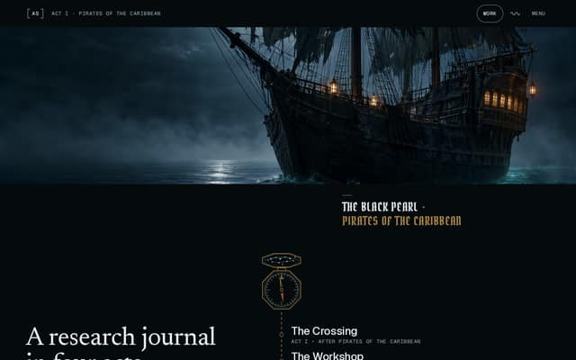
D10-act-1-mid
SM-3 opening card (Act I, Pirates) — mid
- J1 Pirates of the Caribbean 0.90 Black Pearl with tattered sails at night, Jack's compass and dotted trail below
- J2 Pirates of the Caribbean 0.90 Black Pearl-style ghost ship with Jack's compass below
- J3 Pirates of the Caribbean 0.90 Black Pearl with tattered sails in fog, Jack's compass below
“Ghostly ship with shredded black sails plus the hinged compass is unmistakably Pirates” — J1

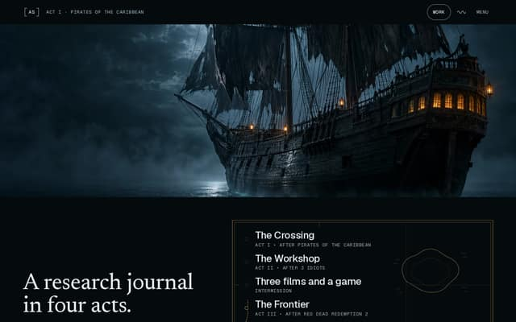
A10-act-1-mid
SM-3 opening card (Act I, Pirates) — mid
- J1 Pirates of the Caribbean 0.90 Black Pearl at night above a gold-line treasure chart
- J2 Pirates of the Caribbean 0.85 Black Pearl ghost ship above an island treasure map
- J3 Pirates of the Caribbean 0.90 Black Pearl in fog above a gold-framed treasure chart
“Tattered-sailed ghost ship in fog is the Black Pearl” — J1

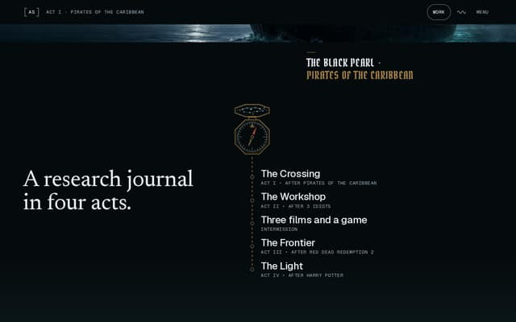
D10-act-1-settled
SM-3 opening card (Act I, Pirates) — settled
- J1 Pirates of the Caribbean 0.70 Jack's compass with a dotted trail, sliver of ship hull and sea above
- J2 Pirates of the Caribbean 0.65 Jack's compass with dotted course below ship hull
- J3 Pirates of the Caribbean 0.65 Jack's compass with dotted route, sliver of ship hull and sea above
“Hinged octagonal compass with red needle reads as Jack's compass” — J1

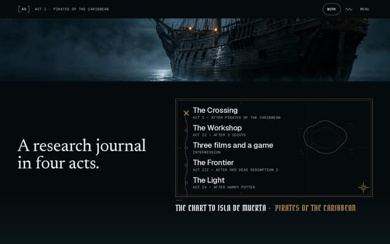
A10-act-1-settled
SM-3 opening card (Act I, Pirates) — settled
- J1 Pirates of the Caribbean 0.85 Black Pearl hull above a gold treasure chart with island, dotted trail and X
- J2 Pirates of the Caribbean 0.85 Black Pearl hull in fog above island treasure map
- J3 Pirates of the Caribbean 0.85 Black Pearl hull in fog above a gold treasure chart with X and compass rose
“Ghost-ship hull plus treasure island chart is Pirates” — J1
Act I: About and the Journey voyage (Pirates) 8

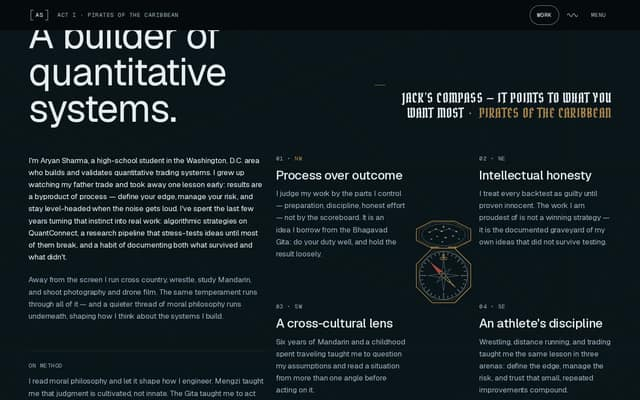
D20-about-120
Act I About (ship's log)
- J1 Pirates of the Caribbean 0.65 Jack's compass on a navigational chart with rhumb lines
- J2 Pirates of the Caribbean 0.60 Jack's compass open on nautical chart lines
- J3 Pirates of the Caribbean 0.55 Jack's compass alone on a dark nautical chart grid
“Hinged octagonal compass on a nautical chart reads Pirates” — J1

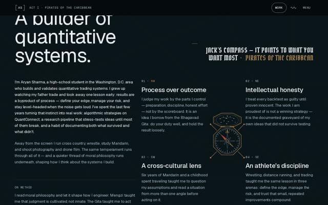
A20-about-120
Act I About (ship's log)
- J1 Pirates of the Caribbean 0.65 Jack's compass on a navigational chart with rhumb lines
- J2 Pirates of the Caribbean 0.60 Jack's compass open on nautical chart lines
- J3 Pirates of the Caribbean 0.55 Jack's compass alone on a dark nautical chart grid
“Hinged octagonal compass on a nautical chart reads Pirates” — J1

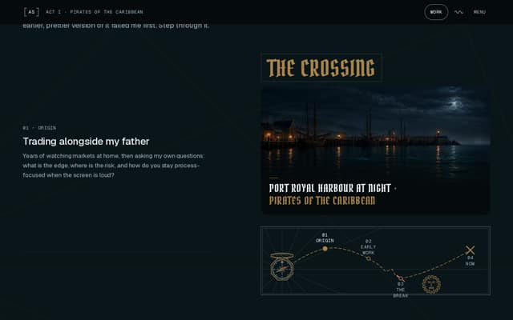
D21-journey-step-1
SM-4 voyage step 1: harbour
- J1 Pirates of the Caribbean 0.80 Moonlit harbor with tall ships; chart with Jack's compass, dashed route to X and Aztec coin
- J2 Pirates of the Caribbean 0.70 Moonlit harbor with tall ships plus compass treasure route map
- J3 Pirates of the Caribbean 0.80 Moonlit harbour of tall ships, compass-to-X treasure route with Aztec medallion
“Lantern-lit port of tall ships plus compass, treasure X and Aztec medallion is Pirates” — J1

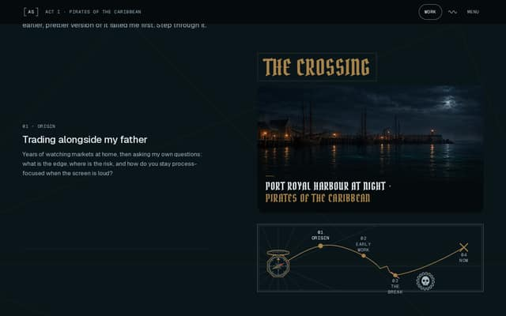
A21-journey-step-1
SM-4 voyage step 1: harbour
- J1 Pirates of the Caribbean 0.80 Moonlit harbor with tall ships; chart with Jack's compass, dashed route to X and Aztec coin
- J2 Pirates of the Caribbean 0.70 Moonlit harbor with tall ships plus compass treasure route map
- J3 Pirates of the Caribbean 0.80 Moonlit harbour of tall ships, compass-to-X treasure route with Aztec medallion
“Lantern-lit port of tall ships plus compass, treasure X and Aztec medallion is Pirates” — J1

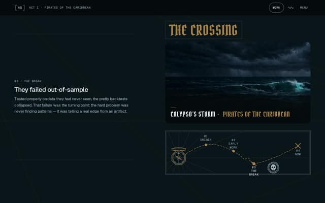
D22-journey-step-3
SM-4 voyage step 3: the break
- J1 Pirates of the Caribbean 0.75 Stormy sea card above a chart with Jack's compass, route to X and skull coin
- J2 Pirates of the Caribbean 0.75 Stormy sea with compass route to X and skull medallion
- J3 Pirates of the Caribbean 0.75 Stormy teal sea card above compass-to-X route with skull medallion
“Rough sea plus compass and treasure X read Pirates” — J1

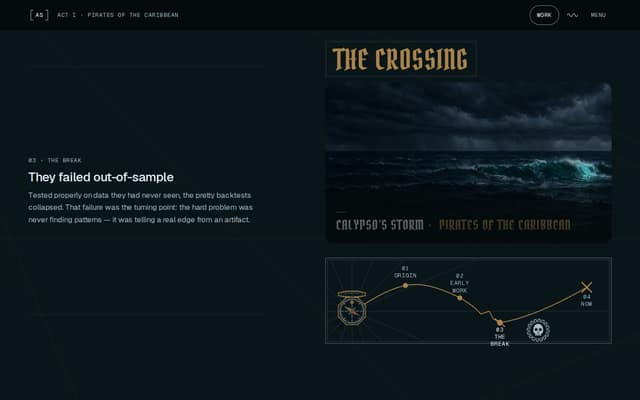
A22-journey-step-3
SM-4 voyage step 3: the break
- J1 Pirates of the Caribbean 0.75 Stormy sea card above a chart with Jack's compass, route to X and skull coin
- J2 Pirates of the Caribbean 0.75 Stormy sea with compass route to X and skull medallion
- J3 Pirates of the Caribbean 0.75 Stormy teal sea card above compass-to-X route with skull medallion
“Rough sea plus compass and treasure X read Pirates” — J1

D23-journey-step-4
SM-4 voyage step 4: X marks the spot
- J1 Pirates of the Caribbean 0.75 Ship at sunset on the horizon with a glowing wake; chart with compass, route, skull coin
- J2 Pirates of the Caribbean 0.70 Ship on sunset horizon with glowing wake, compass route map to X
- J3 Pirates of the Caribbean 0.80 Ship at sunset on the horizon with glowing wake, compass-to-X route with skull medallion
“Tall ship at sea plus compass, X and skull medallion read Pirates” — J1

A23-journey-step-4
SM-4 voyage step 4: X marks the spot
- J1 Pirates of the Caribbean 0.75 Ship at sunset on the horizon with a glowing wake; chart with compass, route, skull coin
- J2 Pirates of the Caribbean 0.70 Ship on sunset horizon with glowing wake, compass route map to X
- J3 Pirates of the Caribbean 0.80 Ship at sunset on the horizon with glowing wake, compass-to-X route with skull medallion
“Tall ship at sea plus compass, X and skull medallion read Pirates” — J1
Card I → II: storm → ICE lecture hall (Pirates → 3 Idiots) 6

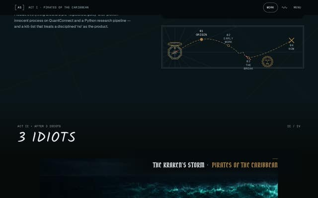
D10-act-2-enter
SM-5 card I→II Pirates→3 Idiots — enter
- J1 Pirates of the Caribbean 0.75 Treasure chart with compass and Aztec coin; glowing sea with ship spars below
- J2 Pirates of the Caribbean 0.60 Compass treasure route with Aztec medallion, stormy sea below
- J3 Pirates of the Caribbean 0.70 Compass-to-X treasure route with Aztec medallion above a glowing sea
“Compass, dashed route to X, Aztec medallion and teal sea are Pirates” — J1

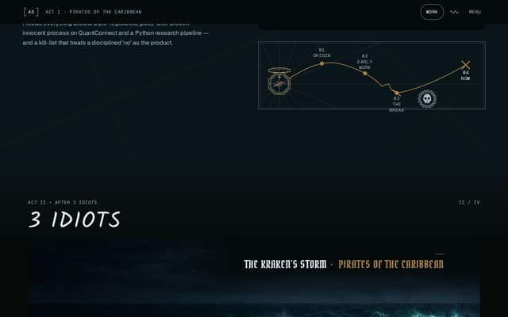
A10-act-2-enter
SM-5 card I→II Pirates→3 Idiots — enter
- J1 Pirates of the Caribbean 0.75 Treasure chart with compass and Aztec coin; glowing sea with ship spars below
- J2 Pirates of the Caribbean 0.60 Compass treasure route with Aztec medallion, stormy sea below
- J3 Pirates of the Caribbean 0.70 Compass-to-X treasure route with Aztec medallion above a glowing sea
“Compass, dashed route to X, Aztec medallion and teal sea are Pirates” — J1

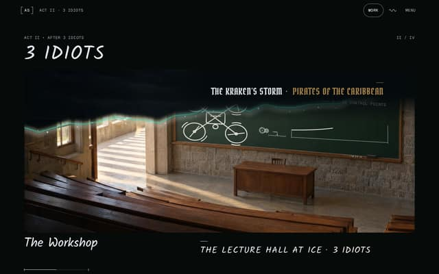
D10-act-2-mid
SM-5 card I→II Pirates→3 Idiots — mid
- J1 3 Idiots 0.70 ICE lecture hall with drone chalk drawing, glowing sea line creeping over the top
- J2 3 Idiots 0.65 ICE lecture hall with drone on chalkboard, dark sea flooding in from top (blend)
- J3 3 Idiots 0.60 ICE lecture hall with drone and bicycle chalk sketch, stormy sea sky dissolving in from above
“Tiered wooden benches, stone lecture hall and drone chalkboard read as ICE; teal wave edge suggests a blend from the Pirates sea” — J1

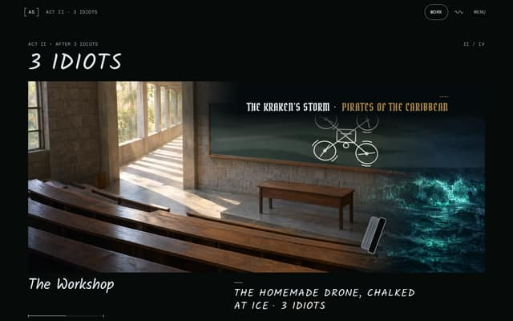
A10-act-2-mid
SM-5 card I→II Pirates→3 Idiots — mid
- J1 3 Idiots 0.55 ICE lecture hall with drone chalkboard dissolving into a glowing stormy sea
- J2 3 Idiots 0.60 Lecture hall with drone chalkboard dissolving into stormy sea (blend)
- J3 3 Idiots 0.60 ICE lecture hall with drone chalk sketch, glowing sea waves washing in from the right
“Lecture hall and drone sketch dominate (3 Idiots); right side blends into the Pirates sea” — J1

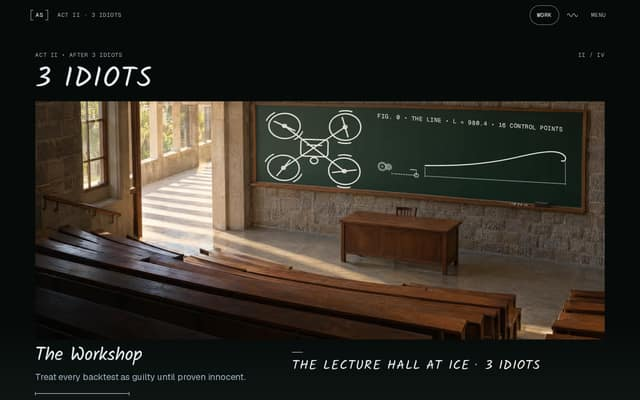
D10-act-2-settled
SM-5 card I→II Pirates→3 Idiots — settled
- J1 3 Idiots 0.75 ICE lecture hall with drone schematic on the chalkboard
- J2 3 Idiots 0.70 ICE lecture hall with drone schematic on chalkboard
- J3 3 Idiots 0.75 ICE lecture hall with chalk drawing of Rancho's drone
“Tiered wooden benches in a stone lecture hall with a quadcopter chalk sketch is ICE” — J1

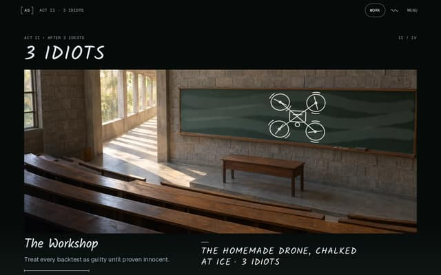
A10-act-2-settled
SM-5 card I→II Pirates→3 Idiots — settled
- J1 3 Idiots 0.75 ICE lecture hall with a quadcopter drone sketch on the chalkboard
- J2 3 Idiots 0.70 ICE lecture hall with Rancho's drone drawn on chalkboard
- J3 3 Idiots 0.75 ICE lecture hall with chalk drawing of Rancho's drone
“Stone lecture hall, wooden benches and drone chalk drawing are ICE” — J1
Act II: Work, chapters, experiment, systems and the kill-list (3 Idiots) 14

D24-work
SM-6 work head band (top)
- J1 3 Idiots 0.65 Virus's astronaut pen in a velvet case beside a pocket watch, chalkboard behind
- J2 3 Idiots 0.55 Virus's astronaut pen in velvet case with stopwatch by chalkboard
- J3 3 Idiots 0.60 Virus's astronaut pen in a velvet box with a stopwatch before a chalkboard
“Engraved pen in a presentation box in a classroom is the astronaut pen” — J1

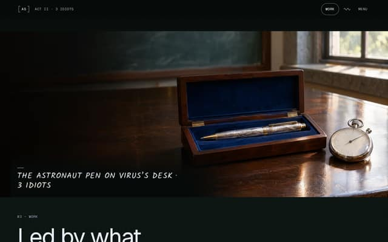
A24-work
SM-6 work head band (top)
- J1 3 Idiots 0.65 Virus's astronaut pen in a velvet case beside a pocket watch
- J2 3 Idiots 0.55 Virus's astronaut pen in velvet box with stopwatch
- J3 3 Idiots 0.60 Virus's astronaut pen in a velvet box with a stopwatch
“Engraved pen in presentation box with stopwatch in a classroom is the astronaut pen” — J1

D25-work-board
SM-6 gauntlet on the ICE dawn board (board, gates)
- J1 3 Idiots 0.60 Classroom chalkboard in sunlight with drone sketch and bar chart, one bar highlighted
- J2 3 Idiots 0.45 Chalkboard with bar chart and drone sketch by stone arched window
- J3 3 Idiots 0.60 Chalkboard with drone sketch and bar diagram in a sunlit stone classroom
“Chalkboard with a drone diagram suggests Rancho; stone arched window is less specific” — J1

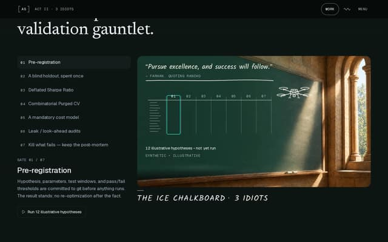
A25-work-board
SM-6 gauntlet on the ICE dawn board (board, gates)
- J1 3 Idiots 0.60 Classroom chalkboard in sunlight with drone sketch and bar chart, one bar highlighted
- J2 3 Idiots 0.45 Chalkboard with bar chart and drone sketch by stone arched window
- J3 3 Idiots 0.60 Chalkboard with drone sketch and bar diagram in a sunlit stone classroom
“Chalkboard with a drone diagram suggests Rancho; stone arched window is less specific” — J1

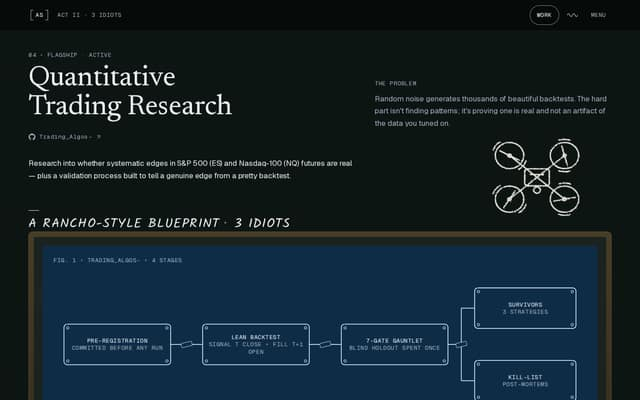
D26-trading-algos
SM-7 chapter Trading_Algos
- J1 3 Idiots 0.25 Framed blue board with a flowchart of connected boxes
- J2 3 Idiots 0.20 Blueprint-style flow diagram on a framed board
- J3 3 Idiots 0.25 Blueprint-style flowchart boards on a framed board
“A framed board diagram suggests a classroom, but it is a generic flowchart” — J1
Fixed after the final test, not re-judged. The Act II chalk drone now sits beside the caption (at 1024 px and wider).

A26-trading-algos
SM-7 chapter Trading_Algos
- J1 3 Idiots 0.25 Framed blue board with a flowchart of connected boxes
- J2 3 Idiots 0.20 Blueprint-style flow diagram on a framed board
- J3 3 Idiots 0.25 Blueprint-style flowchart boards on a framed board
“A framed board diagram suggests a classroom, but it is a generic flowchart” — J1
Fixed after the final test, not re-judged. The Act II chalk drone now sits beside the caption (at 1024 px and wider).

D27-optuna-screener
SM-7 chapter Optuna-Screener
- J1 3 Idiots 0.55 ICE lecture hall with a nearly blank chalkboard
- J2 3 Idiots 0.45 Empty ICE lecture hall with blank chalkboard
- J3 3 Idiots 0.45 Empty ICE lecture hall with blank chalkboard
“Stone lecture hall with tiered wooden benches reads as ICE, but no signature prop” — J1
Fixed after the final test, not re-judged. The chalk drone is drawn on the board’s free top-right.

A27-optuna-screener
SM-7 chapter Optuna-Screener
- J1 3 Idiots 0.55 ICE lecture hall with an empty chalkboard and a circled blank note
- J2 3 Idiots 0.45 Empty ICE lecture hall with chalkboard and professor's desk
- J3 3 Idiots 0.45 Empty ICE lecture hall with blank chalkboard
“Stone lecture hall with wooden benches reads as ICE, but no signature prop” — J1
Fixed after the final test, not re-judged. The chalk drone is drawn on the board’s free top-right.

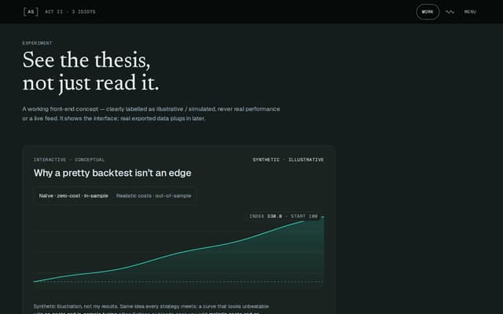
D28-experiment
Experiment (BacktestDemo, synthetic; NO film styling)
- J1 no film named 0.10 Dark dashboard card with a rising teal line chart
- J2 no film named 0.10 Line chart on dark green card
- J3 no film named 0.10 Generic rising area chart on a dark panel
“Generic analytics chart with no themed imagery” — J1

A28-experiment
Experiment (BacktestDemo, synthetic; NO film styling)
- J1 no film named 0.10 Dark dashboard card with a rising teal line chart
- J2 no film named 0.10 Line chart on dark green card
- J3 no film named 0.10 Generic rising area chart on a dark panel
“Generic analytics chart with no themed imagery” — J1

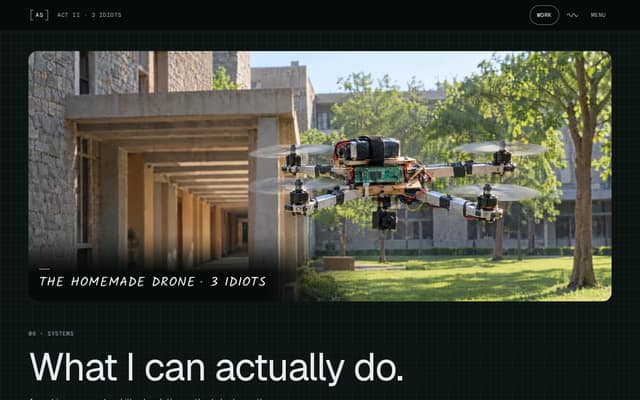
D29-systems
Systems FIG + drone band
- J1 3 Idiots 0.75 Rancho's homemade quadcopter drone hovering over a stone college courtyard
- J2 3 Idiots 0.60 Rancho's homemade quadcopter flying across the college campus
- J3 3 Idiots 0.75 Rancho's homemade quadcopter drone flying across the stone ICE campus
“Taped-together DIY drone at an Indian stone campus is the 3 Idiots drone scene” — J1

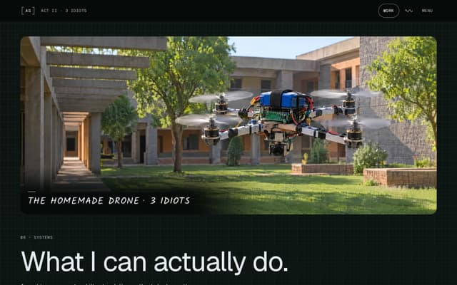
A29-systems
Systems FIG + drone band
- J1 3 Idiots 0.75 Homemade quadcopter drone hovering in a college courtyard
- J2 3 Idiots 0.60 Rancho's homemade drone flying over college campus
- J3 3 Idiots 0.75 Rancho's homemade quadcopter flying over the ICE campus lawn
“Taped DIY drone over an Indian campus lawn is Rancho's drone” — J1

D30-kill-list
SM-8 kill-list header cue
- J1 3 Idiots 0.65 Virus's astronaut pen in a velvet case beside a pocket watch on a classroom desk
- J2 3 Idiots 0.45 Virus's astronaut pen in velvet box with stopwatch
- J3 3 Idiots 0.60 Virus's astronaut pen in a velvet box beside a stopwatch in a classroom
“Ornate pen in a presentation box plus stopwatch in a classroom is the astronaut pen” — J1

A30-kill-list
SM-8 kill-list header cue
- J1 3 Idiots 0.65 Virus's astronaut pen in a velvet case beside a pocket watch on a classroom desk
- J2 3 Idiots 0.45 Virus's astronaut pen in velvet box with stopwatch
- J3 3 Idiots 0.60 Virus's astronaut pen in a velvet box beside a stopwatch in a classroom
“Ornate pen in a presentation box plus stopwatch in a classroom is the astronaut pen” — J1
Films chapter: “Three films and a game” (house, four screens) 8

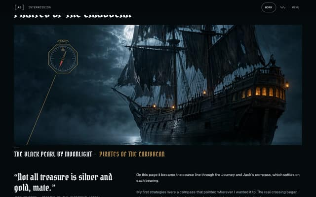
D43-films-pirates
SM-9 films chapter screen: pirates
- J1 Pirates of the Caribbean 0.92 Black Pearl under the moon with Jack's compass overlaid
- J2 Pirates of the Caribbean 0.90 Black Pearl under the moon with Jack's compass callout
- J3 Pirates of the Caribbean 0.90 Black Pearl under the moon with Jack's compass callout
“Tattered black sails plus Jack's compass are unmistakable Pirates” — J1

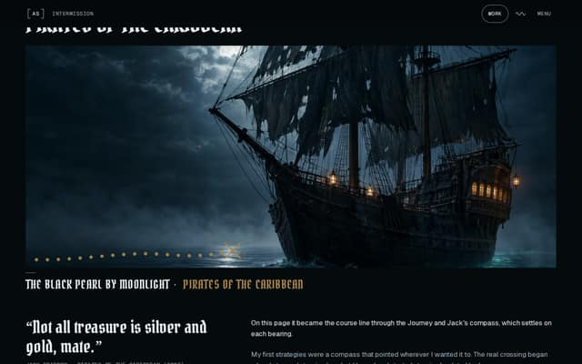
A43-films-pirates
SM-9 films chapter screen: pirates
- J1 Pirates of the Caribbean 0.90 Black Pearl under the moon with a gold dotted trail to an X
- J2 Pirates of the Caribbean 0.90 Black Pearl ghost ship with dotted course to X
- J3 Pirates of the Caribbean 0.90 Black Pearl in moonlit fog with gold dotted route to an X
“Tattered-sail ghost ship plus treasure trail is the Black Pearl” — J1

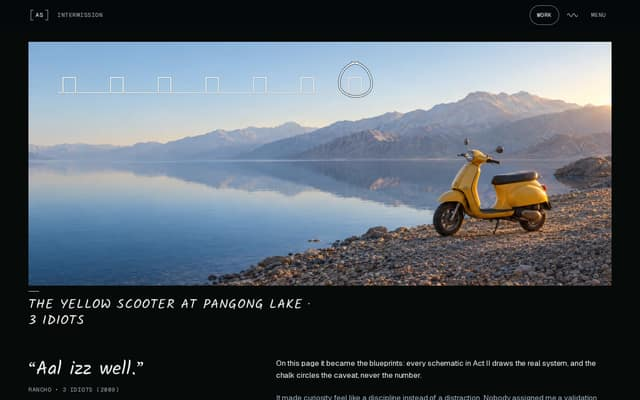
D44-films-idiots
SM-9 films chapter screen: idiots
- J1 3 Idiots 0.85 Yellow scooter parked on the shore of Pangong lake
- J2 3 Idiots 0.85 Yellow scooter on the shore of Pangong lake
- J3 3 Idiots 0.85 Yellow scooter on the pebbly shore of Pangong lake, doors diagram above
“Yellow scooter at a still blue high-altitude lake is the 3 Idiots finale” — J1

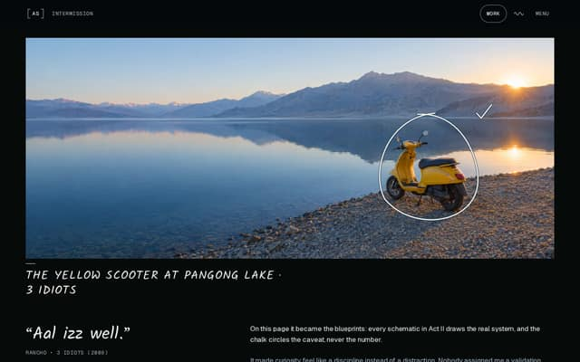
A44-films-idiots
SM-9 films chapter screen: idiots
- J1 3 Idiots 0.85 Yellow scooter circled with a check mark at Pangong lake at sunrise
- J2 3 Idiots 0.85 Yellow scooter at Pangong lake, circled with check mark
- J3 3 Idiots 0.85 Yellow scooter circled and ticked at Pangong lake at sunrise
“Yellow scooter by a mirror-still Ladakh lake is the 3 Idiots finale” — J1

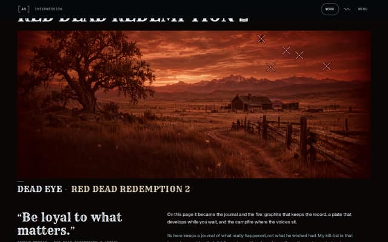
D45-films-rdr2
SM-9 films chapter screen: rdr2
- J1 Red Dead Redemption 2 0.55 Saddled horse silhouetted on a ridge at golden-hour dusk, dashed GPS-style trail
- J2 Red Dead Redemption 2 0.55 Saddled horse silhouetted on ridge at golden hour
- J3 Red Dead Redemption 2 0.55 Lone saddled horse silhouetted on a ridge at dusk with a dashed trail line
“Lone horse on open grassland at sunset evokes the RDR2 frontier, but a sunset horse is fairly generic” — J1
Fixed after the final test, not re-judged. New plate: the red-sky Dead Eye plate, ember X marks on the five birds. Caption DEAD EYE (proposed).

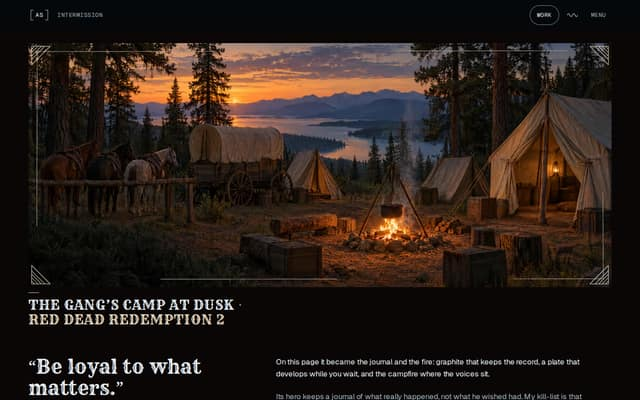
A45-films-rdr2
SM-9 films chapter screen: rdr2
- J1 Red Dead Redemption 2 0.55 Horse silhouetted on a ridge at golden-hour dusk, framed with deco corners
- J2 Red Dead Redemption 2 0.60 Saddled horse on ridge at golden hour, framed corners
- J3 Red Dead Redemption 2 0.55 Lone saddled horse silhouetted on a ridge at dusk inside ornate corner frame
“Lone saddled horse on prairie at sunset evokes RDR2 but is fairly generic” — J1
Fixed after the final test, not re-judged. New plate: the gang’s camp by the lake as a journal clipping. Caption THE GANG’S CAMP AT DUSK (proposed).

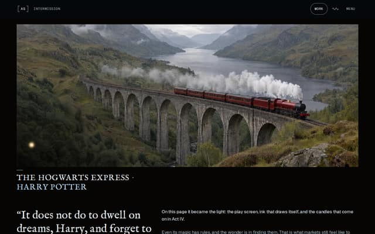
D46-films-hp
SM-9 films chapter screen: hp
- J1 Harry Potter 0.95 Hogwarts Express crossing the Glenfinnan Viaduct
- J2 Harry Potter 0.95 Hogwarts Express crossing the Glenfinnan Viaduct
- J3 Harry Potter 0.90 Hogwarts Express crossing the Glenfinnan viaduct
“Red steam train on the curved stone viaduct in the Highlands is iconic HP” — J1

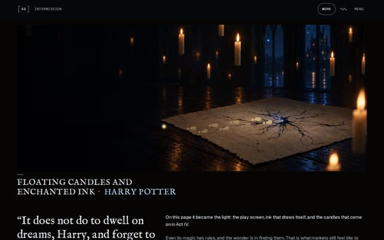
A46-films-hp
SM-9 films chapter screen: hp
- J1 Harry Potter 0.85 Floating candles, Gothic windows onto castle, parchment on floor with ink spreading and glowing footprints
- J2 Harry Potter 0.85 Marauder's Map on floor of candlelit hall, castle in window
- J3 Harry Potter 0.85 Floating candles in a Hogwarts hall, parchment map with footprints on the floor, castle in the windows
“Floating candles and a castle through arched windows plus footprints on parchment read as Hogwarts and the Marauder's Map” — J1
Card II → III: the tintype (→ Red Dead Redemption 2) 6

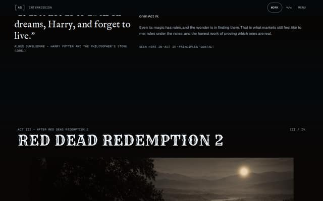
D10-act-3-enter
SM-14 card II→III → RDR2 tintype — enter
- J1 Red Dead Redemption 2 0.40 Mostly dark page, sepia valley with tree and low sun rising into view
- J2 Red Dead Redemption 2 0.30 Sepia hills and sun under tree silhouette (mostly dark, scrolling in)
- J3 Red Dead Redemption 2 0.35 Sepia valley with tree and low sun emerging from darkness
“Sepia frontier valley hints at RDR2, but little is visible” — J1

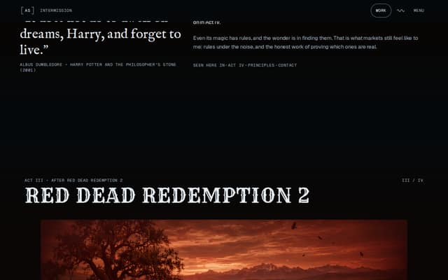
A10-act-3-enter
SM-14 card II→III → RDR2 tintype — enter
- J1 Red Dead Redemption 2 0.50 Mostly black page, crimson sky with oak tree and circling vultures rising into view
- J2 Red Dead Redemption 2 0.60 Blood-red frontier sky with oak tree and buzzards (partially scrolled in)
- J3 Red Dead Redemption 2 0.50 Blood-red sky over mountains, lone oak and circling vultures (card entering from below)
“Blood-red western sky with vultures feels RDR2, but most of the frame is empty” — J1

D10-act-3-mid
SM-14 card II→III → RDR2 tintype — mid
- J1 Red Dead Redemption 2 0.75 Golden-hour river valley, saddled horse grazing, lasso line
- J2 Red Dead Redemption 2 0.70 Golden-hour valley with grazing saddled horse (lasso-like line)
- J3 Red Dead Redemption 2 0.70 Golden-hour river valley, grazing saddled horse, lasso line
“Frontier vista at golden hour with a saddled horse is very RDR2” — J1

A10-act-3-mid
SM-14 card II→III → RDR2 tintype — mid
- J1 Red Dead Redemption 2 0.85 Crimson ranch at sunset with oak tree and vultures, Dead Eye X marks along a lasso line
- J2 Red Dead Redemption 2 0.85 Dead Eye marks across red-sky frontier homestead
- J3 Red Dead Redemption 2 0.85 Crimson-sky homestead with oak, fence and vultures; Dead Eye X marks along a lasso
“Red-filtered western homestead with painted-X targets mirrors RDR2's Dead Eye” — J1

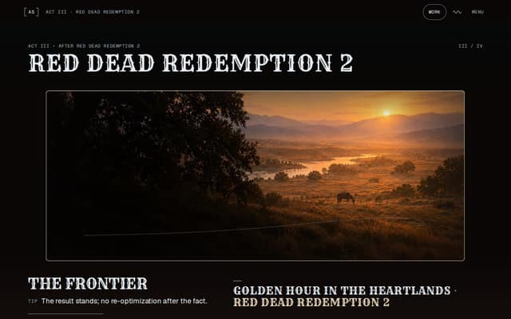
D10-act-3-settled
SM-14 card II→III → RDR2 tintype — settled
- J1 Red Dead Redemption 2 0.75 Golden-hour river valley, saddled horse grazing, lasso line across the grass
- J2 Red Dead Redemption 2 0.70 Golden-hour valley with river and grazing saddled horse
- J3 Red Dead Redemption 2 0.70 Golden-hour river valley, grazing saddled horse, lasso line
“Sweeping frontier vista at golden hour with a saddled horse and lasso is very RDR2” — J1

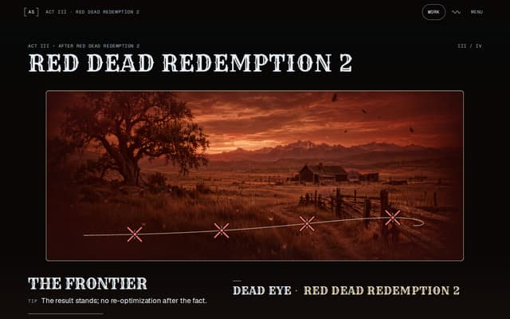
A10-act-3-settled
SM-14 card II→III → RDR2 tintype — settled
- J1 Red Dead Redemption 2 0.85 Crimson ranch at sunset with oak tree and vultures, Dead Eye X marks along a lasso line
- J2 Red Dead Redemption 2 0.85 Dead Eye marks across red-sky frontier homestead
- J3 Red Dead Redemption 2 0.85 Crimson-sky homestead with Dead Eye X marks along a lasso
“Red-tinted homestead with X targets is RDR2 Dead Eye” — J1
Act III: Beyond, Writing and Voices (Red Dead Redemption 2) 14

D32-beyond
SM-15 frontier golden-hour band
- J1 Red Dead Redemption 2 0.70 Golden-hour river valley with a saddled horse grazing, full bleed
- J2 Red Dead Redemption 2 0.70 Golden-hour frontier valley with grazing saddled horse
- J3 Red Dead Redemption 2 0.70 Golden-hour river valley with grazing saddled horse (full-bleed)
“Warm frontier vista with a saddled horse evokes RDR2” — J1

A32-beyond
SM-15 frontier golden-hour band
- J1 Red Dead Redemption 2 0.70 Golden-hour river valley with a saddled horse grazing, full bleed
- J2 Red Dead Redemption 2 0.70 Golden-hour frontier valley with grazing saddled horse
- J3 Red Dead Redemption 2 0.70 Golden-hour river valley with grazing saddled horse (full-bleed)
“Warm frontier vista with a saddled horse evokes RDR2” — J1

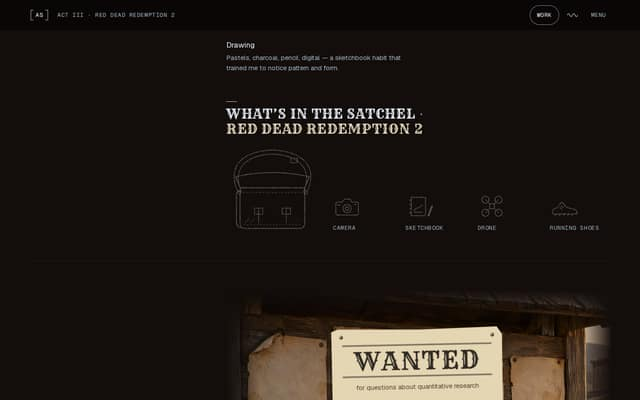
D33-beyond-satchel
SM-15 beyond: the satchel
- J1 Red Dead Redemption 2 0.60 Sketched satchel with inventory icons (camera, journal, drone, boot) above the WANTED board
- J2 Red Dead Redemption 2 0.50 Satchel inventory icons above wanted-poster board
- J3 Red Dead Redemption 2 0.60 Satchel sketch with inventory icons above the WANTED board
“Satchel inventory and bounty board feel RDR2, though the icons are modern” — J1
Fixed after the final test, not re-judged. The satchel is redrawn as a shoulder satchel (long strap, two buckled straps).

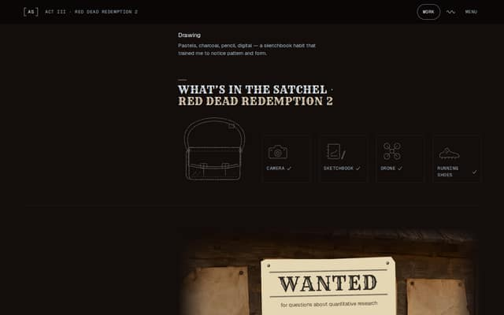
A33-beyond-satchel
SM-15 beyond: the satchel
- J1 Red Dead Redemption 2 0.60 Satchel with checked-off inventory slots (camera, journal, drone, boot) above WANTED posters
- J2 Red Dead Redemption 2 0.45 Satchel with item icons, wanted-poster board below
- J3 Red Dead Redemption 2 0.55 Satchel with ticked inventory slots above the posters board
“Satchel inventory UI and bounty board feel RDR2” — J1
Fixed after the final test, not re-judged. The satchel is redrawn as a shoulder satchel (long strap, two buckled straps).

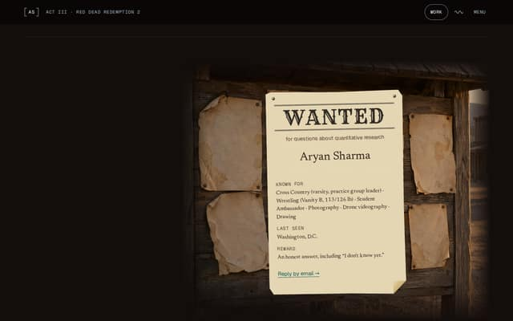
D34-beyond-wanted
SM-15 beyond: the WANTED handbill
- J1 Red Dead Redemption 2 0.70 Wooden notice board with pinned aged WANTED posters
- J2 Red Dead Redemption 2 0.60 Wanted posters nailed to a wooden board in a frontier town
- J3 Red Dead Redemption 2 0.75 WANTED poster pinned among weathered bills on a western town board
“Weathered frontier board with nailed parchment posters reads as an RDR2 bounty board” — J1

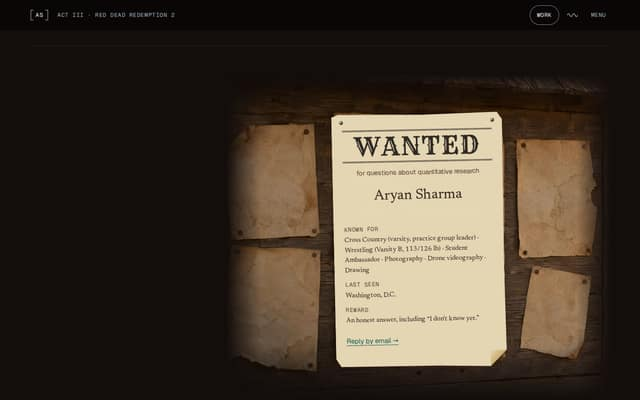
A34-beyond-wanted
SM-15 beyond: the WANTED handbill
- J1 Red Dead Redemption 2 0.70 Wooden board with pinned WANTED posters
- J2 Red Dead Redemption 2 0.60 Wanted posters nailed to wooden board
- J3 Red Dead Redemption 2 0.75 WANTED poster pinned among weathered bills on a wooden board
“Weathered frontier board with nailed parchment posters is RDR2 bounty board” — J1

D35-beyond-2800
SM-15 beyond end
- J1 Red Dead Redemption 2 0.70 Wooden board with pinned WANTED posters
- J2 Red Dead Redemption 2 0.60 Wanted posters on wooden board in frontier town
- J3 Red Dead Redemption 2 0.75 WANTED poster pinned among weathered bills on a western noticeboard
“Weathered frontier notice board with nailed posters reads as RDR2 bounties” — J1

A35-beyond-2800
SM-15 beyond end
- J1 Red Dead Redemption 2 0.70 Wooden board with pinned WANTED posters
- J2 Red Dead Redemption 2 0.60 Wanted posters nailed to wooden board
- J3 Red Dead Redemption 2 0.75 WANTED poster pinned among weathered bills on a wooden board
“Frontier notice board with nailed posters reads as RDR2 bounties” — J1

D36-writing
SM-11 Arthur's journal (writing)
- J1 Red Dead Redemption 2 0.80 Arthur's journal page with pencil sketch of mountains, lake, saddled horse and pines
- J2 Red Dead Redemption 2 0.55 Arthur's journal spread: pencil sketch of mountains, lake, pines, saddled horse
- J3 Red Dead Redemption 2 0.75 Arthur's journal spread: pencil sketch of mountains, lake, saddled horse with rifle, pines
“Cream journal paper with hatched pencil sketch of a horse and frontier landscape is pure Arthur's journal” — J1

A36-writing
SM-11 Arthur's journal (writing)
- J1 Red Dead Redemption 2 0.80 Arthur's journal page with pencil sketch of mountains, lake, saddled horse and pines
- J2 Red Dead Redemption 2 0.55 Arthur's journal spread: pencil sketch of mountains, lake, pines, saddled horse
- J3 Red Dead Redemption 2 0.75 Arthur's journal spread: pencil sketch of mountains, lake, saddled horse with rifle, pines
“Cream journal paper with hatched pencil sketch of a horse and frontier landscape is pure Arthur's journal” — J1

D37-writing-1000
SM-11 journal pages
- J1 Red Dead Redemption 2 0.80 Arthur's journal page with pencil sketch of mountains, lake, saddled horse
- J2 Red Dead Redemption 2 0.55 Arthur's journal page: mountains, lake, pines, saddled horse
- J3 Red Dead Redemption 2 0.75 Arthur's journal spread: pencil sketch of mountains, lake, saddled horse, pines
“Hatched pencil journal sketch of a horse in the wilderness is Arthur's journal” — J1

A37-writing-1000
SM-11 journal pages
- J1 Red Dead Redemption 2 0.80 Arthur's journal page with pencil sketch of mountains, lake, saddled horse
- J2 Red Dead Redemption 2 0.55 Arthur's journal page: mountains, lake, pines, saddled horse
- J3 Red Dead Redemption 2 0.75 Arthur's journal spread: pencil sketch of mountains, lake, saddled horse, pines
“Hatched pencil journal sketch of a horse in the wilderness is Arthur's journal” — J1

D31-voices
SM-16 by the fire (camp)
- J1 Red Dead Redemption 2 0.80 Gang camp at dusk: canvas tents, campfire with cooking pot, covered wagon, mountains
- J2 Red Dead Redemption 2 0.70 Gang camp at dusk: canvas tents, covered wagon, campfire with pot
- J3 Red Dead Redemption 2 0.80 Gang camp at dusk: canvas tents, campfire stew pot, covered wagon, mountains
“Canvas tents, campfire pot and chuck wagon among pines are pure RDR2 camp” — J1

A31-voices
SM-16 by the fire (camp)
- J1 Red Dead Redemption 2 0.65 Night campfire between two canvas tents under mountains
- J2 Red Dead Redemption 2 0.50 Night campfire between canvas tents under mountains
- J3 Red Dead Redemption 2 0.60 Night campfire between canvas tents under mountains
“Canvas tents around a campfire in the wilderness evoke RDR2 camp, though camping is generic” — J1
Card III → IV: embers → candles → the Great Hall (RDR2 → Harry Potter) 6

D10-act-4-enter
SM-10 card III→IV RDR2→HP ignite — enter
- J1 Red Dead Redemption 2 0.75 Campfire with cooking pot above, pine-lake camp with tents below (scroll transition)
- J2 Red Dead Redemption 2 0.60 Campfire with cook pot and stumps, lakeside camp below
- J3 Red Dead Redemption 2 0.70 Campfire close-up above, lakeside camp with tents and wagon below
“Both halves show the frontier camp and campfire” — J1

A10-act-4-enter
SM-10 card III→IV RDR2→HP ignite — enter
- J1 Red Dead Redemption 2 0.55 Mostly dark page, a pine-forest lake camp with covered wagon and tent at sunset rising in
- J2 Red Dead Redemption 2 0.50 Camp with covered wagon and tent at sunset lake (mostly dark, scrolling in)
- J3 Red Dead Redemption 2 0.50 Camp in pines by a lake at sunset with covered wagon and tent (mostly dark frame)
“Canvas tent and covered wagon among pines read as RDR2 camp, but only partly visible” — J1

D10-act-4-mid
SM-10 card III→IV RDR2→HP ignite — mid
- J1 Harry Potter 0.90 Great Hall with a spell line lighting candles in sequence, faint tree overlay
- J2 Harry Potter 0.93 Great Hall floating candles with rising graph line (slight blend at left)
- J3 Harry Potter 0.90 Great Hall with floating candles lined up into a rising chart
“Great Hall with floating candles is iconic HP; faint foliage ghost hints at a blend” — J1

A10-act-4-mid
SM-10 card III→IV RDR2→HP ignite — mid
- J1 Harry Potter 0.93 Great Hall with floating candles and a wand spell streak
- J2 Harry Potter 0.95 Great Hall floating candles with wand trail
- J3 Harry Potter 0.90 Great Hall with floating candles and a wand-light trail
“Floating candles in the Great Hall plus a spell trail are iconic HP” — J1

D10-act-4-settled
SM-10 card III→IV RDR2→HP ignite — settled
- J1 Harry Potter 0.97 The Great Hall with hundreds of floating candles under a night-sky ceiling
- J2 Harry Potter 0.97 Great Hall with floating candles under enchanted ceiling
- J3 Harry Potter 0.95 Great Hall with floating candles and enchanted night-sky ceiling
“Floating candles over house tables under an enchanted sky is iconic HP” — J1

A10-act-4-settled
SM-10 card III→IV RDR2→HP ignite — settled
- J1 Harry Potter 0.97 The Great Hall with floating candles
- J2 Harry Potter 0.97 Great Hall with floating candles
- J3 Harry Potter 0.95 Great Hall with floating candles and enchanted night-sky ceiling
“Floating candles and long tables in a Gothic hall are iconic HP” — J1
Act IV: Principles and Contact (Harry Potter) 6

D38-principles
Principles (HP)
- J1 Harry Potter 0.80 Marauder's Map top edge with title banner and wandering footprints
- J2 Harry Potter 0.85 Marauder's Map unfolded with footprints
- J3 Harry Potter 0.80 Marauder's Map unfolded with banner and wandering footprints
“Parchment map with ribbon banner, corner seals and footprints is the Marauder's Map” — J1

A38-principles
Principles (HP)
- J1 Harry Potter 0.60 Starry sky filled with floating candles over a quill-like line
- J2 Harry Potter 0.80 Floating candles on starry night sky with broom icon
- J3 Harry Potter 0.60 Floating candles in a starry enchanted sky with wand-trail lines
“Floating candles against a night sky evoke the Great Hall ceiling” — J1

D39-principles-1000
Principles lower
- J1 Harry Potter 0.75 Marauder's Map close-up, corridors with walking footprints
- J2 Harry Potter 0.80 Marauder's Map parchment with moving footprints and corridors
- J3 Harry Potter 0.75 Marauder's Map close-up with footprints walking the corridors
“Folded parchment floor plan with moving inked footprints is the Marauder's Map” — J1

A39-principles-1000
Principles lower
- J1 Harry Potter 0.60 Starry night sky with floating candles in rows, feathered-quill lines
- J2 Harry Potter 0.70 Floating candles and broomstick icons on starry night sky
- J3 Harry Potter 0.60 Floating candles against a starry enchanted ceiling with wand-trail lines
“Floating lit candles against a night sky evoke the Great Hall ceiling; otherwise sparse” — J1

D40-contact
SM-12 last light (contact)
- J1 Harry Potter 0.60 Floating candles in a starry dark sky, one candle targeted by brackets, dotted arc
- J2 Harry Potter 0.65 Floating candles in night sky with a targeting bracket on one candle
- J3 Harry Potter 0.55 Floating candles in a starry sky with one candle targeted, gold dotted arc
“Floating candles evoke Hogwarts; frame is mostly dark and abstract” — J1

A40-contact
SM-12 last light (contact)
- J1 Harry Potter 0.60 Floating candles in a starry dark sky, one candle targeted by brackets, dotted arc
- J2 Harry Potter 0.65 Floating candles in night sky with a targeting bracket on one candle
- J3 Harry Potter 0.55 Floating candles in a starry sky with one candle targeted, gold dotted arc
“Floating candles evoke Hogwarts; frame is mostly dark and abstract” — J1
Credits (house) 4

D41-credits
SM-13 credits roll
- J1 no film named 0.10 Blank dark page with a few horizontal rule lines
- J2 no film named 0.10 Near-empty dark page with ruled lines
- J3 no film named 0.10 Near-empty dark page with faint horizontal rules
“No imagery at all, just empty dark layout lines” — J1

A41-credits
SM-13 credits roll
- J1 no film named 0.10 Blank dark page with a few horizontal rule lines
- J2 no film named 0.10 Near-empty dark page with ruled lines
- J3 no film named 0.10 Near-empty dark page with faint horizontal rules
“No imagery at all, just empty dark layout lines” — J1

D42-credits-1000
SM-13 credits end (Mischief managed)
- J1 Harry Potter 0.50 Dark page with tiny gold Time-Turner, Golden Snitch and Deathly Hallows icons
- J2 Harry Potter 0.50 Tiny time-turner, golden snitch and Deathly Hallows icons on dark page
- J3 Harry Potter 0.40 Mostly empty dark page with tiny Time-Turner, Golden Snitch and Deathly Hallows icons
“Snitch and Hallows symbols are distinctly HP, but the icons are minute on a mostly empty frame” — J1

A42-credits-1000
SM-13 credits end (Mischief managed)
- J1 Harry Potter 0.50 Dark page with tiny gold Time-Turner, Golden Snitch and Deathly Hallows icons
- J2 Harry Potter 0.50 Tiny time-turner, golden snitch and Deathly Hallows icons on dark page
- J3 Harry Potter 0.40 Mostly empty dark page with tiny Time-Turner, Golden Snitch and Deathly Hallows icons
“Snitch and Hallows symbols are distinctly HP, but the icons are minute on a mostly empty frame” — J1
World loaders, card size (/lab strip: indeterminate, determinate, complete, static, mini) 8

D80-loader-card-hp
World loader, card size (hp)
- J1 Harry Potter 0.55 Strip of floating-candle thumbnails lit by a wand streak
- J2 Harry Potter 0.55 Strip of floating-candle cards with wand trails
- J3 Harry Potter 0.50 Strip of floating-candle thumbnails with a wand trail
“Floating candles and wand spark evoke HP, but thumbnails are tiny” — J1
Fixed after the final test, not re-judged. Card loader enlarged from 120 to 176 px; the motif is unchanged.

A80-loader-card-hp
World loader, card size (hp)
- J1 Harry Potter 0.40 Row of tiny parchment floor-plan cards with a banner and footprint trail (Marauder's Map)
- J2 Harry Potter 0.40 Strip of small parchment map thumbnails (Marauder's Map-like)
- J3 Harry Potter 0.35 Strip of tiny parchment floor-plan thumbnails, likely the Marauder's Map
“Parchment map with scroll banner and corridors hints at the Marauder's Map, but thumbnails are very small” — J1
Fixed after the final test, not re-judged. Card loader enlarged from 120 to 176 px; the motif is unchanged.

D80-loader-card-idiots
World loader, card size (idiots)
- J1 3 Idiots 0.55 Strip of small chalkboard thumbnails with drone, gears and astronaut pen
- J2 3 Idiots 0.50 Strip of chalkboard cards with drone, gears, astronaut pen
- J3 3 Idiots 0.55 Strip of chalkboard thumbnails with drone and astronaut pen
“Drone plus pen on chalkboards suggests 3 Idiots, but thumbnails are small” — J1
Fixed after the final test, not re-judged. Card loader enlarged from 120 to 176 px; the motif is unchanged.

A80-loader-card-idiots
World loader, card size (idiots)
- J1 3 Idiots 0.55 Strip of small chalkboard thumbnails with drone, gears and astronaut pen
- J2 3 Idiots 0.50 Strip of chalkboard cards with drone, gears, astronaut pen
- J3 3 Idiots 0.55 Strip of chalkboard thumbnails with drone and astronaut pen
“Drone plus pen on chalkboards suggests 3 Idiots, but thumbnails are small” — J1
Fixed after the final test, not re-judged. Card loader enlarged from 120 to 176 px; the motif is unchanged.

D80-loader-card-pirates
World loader, card size (pirates)
- J1 Pirates of the Caribbean 0.60 Strip of small Jack's-compass thumbnails with a ship sailing toward an X
- J2 Pirates of the Caribbean 0.60 Strip of Jack's compass cards with ship sailing to X
- J3 Pirates of the Caribbean 0.60 Strip of Jack's compass thumbnails with a ship sailing to an X
“Hinged compass with ship and treasure X reads Pirates, but icons are tiny” — J1
Fixed after the final test, not re-judged. Card loader enlarged from 120 to 176 px; the motif is unchanged.

A80-loader-card-pirates
World loader, card size (pirates)
- J1 Pirates of the Caribbean 0.60 Strip of small Jack's-compass thumbnails with a ship sailing toward an X
- J2 Pirates of the Caribbean 0.60 Strip of Jack's compass cards with ship sailing to X
- J3 Pirates of the Caribbean 0.60 Strip of Jack's compass thumbnails with a ship sailing to an X
“Hinged compass with ship and treasure X reads Pirates, but icons are tiny” — J1
Fixed after the final test, not re-judged. Card loader enlarged from 120 to 176 px; the motif is unchanged.

D80-loader-card-rdr2
World loader, card size (rdr2)
- J1 Red Dead Redemption 2 0.45 Strip of journal-sketch thumbnails: horse, hat on fence, sun
- J2 Red Dead Redemption 2 0.50 Strip of journal sketch cards: fence, horse, sun, birds
- J3 Red Dead Redemption 2 0.50 Strip of sketch cards: hat on fence, horse, sun
“Pencil western sketches suggest Arthur's journal, but tiny” — J1
Fixed after the final test, not re-judged. Card loader enlarged from 120 to 176 px; the motif is unchanged.

A80-loader-card-rdr2
World loader, card size (rdr2)
- J1 Red Dead Redemption 2 0.45 Strip of small red-sky ranch thumbnails with Dead Eye X marks along a line
- J2 Red Dead Redemption 2 0.50 Strip of red-sky frontier cards with Dead Eye X marks
- J3 Red Dead Redemption 2 0.40 Strip of tiny red-sky frontier thumbnails with Dead Eye X marks on a line
“Red sunset, lone tree and birds with X targets suggest RDR2 Dead Eye, but thumbnails are tiny” — J1
Fixed after the final test, not re-judged. Card loader enlarged from 120 to 176 px; the motif is unchanged.
World loaders, route size (/lab route cards) 8

D85-loader-route-about
Route loader card (about)
- J1 Pirates of the Caribbean 0.75 Jack's compass with a ship sailing a dotted route to an X
- J2 Pirates of the Caribbean 0.70 Jack's compass pointing a ship toward X
- J3 Pirates of the Caribbean 0.70 Jack's compass with a ship sailing a dotted line to an X
“Hinged compass, galleon and treasure X are Pirates” — J1
Fixed after the final test, not re-judged. Route-loader art enlarged from 288 to 416 px at 1280 px and wider; the motif is unchanged.

A85-loader-route-about
Route loader card (about)
- J1 Pirates of the Caribbean 0.75 Jack's compass with a ship sailing a dotted route to an X
- J2 Pirates of the Caribbean 0.70 Jack's compass pointing a ship toward X
- J3 Pirates of the Caribbean 0.70 Jack's compass with a ship sailing a dotted line to an X
“Hinged compass, galleon and treasure X are Pirates” — J1
Fixed after the final test, not re-judged. Route-loader art enlarged from 288 to 416 px at 1280 px and wider; the motif is unchanged.

D85-loader-route-principles
Route loader card (principles)
- J1 Harry Potter 0.60 Small card of floating candles being lit by a wand streak
- J2 Harry Potter 0.60 Floating candles card with wand swish
- J3 Harry Potter 0.55 Small card of floating candles under stars with a wand trail
“Floating candles with a wand spark evoke Hogwarts; icon-scale” — J1
Fixed after the final test, not re-judged. Route-loader art enlarged from 288 to 416 px at 1280 px and wider; the motif is unchanged.

A85-loader-route-principles
Route loader card (principles)
- J1 Harry Potter 0.50 Small Marauder's Map card with banner, corridors and footprints
- J2 Harry Potter 0.45 Small parchment floorplan with staircases and footprints (Marauder's Map)
- J3 Harry Potter 0.45 Small Marauder's Map card with corridors and a tiny figure
“Parchment floor plan with title banner hints Marauder's Map; small” — J1
Fixed after the final test, not re-judged. Route-loader art enlarged from 288 to 416 px at 1280 px and wider; the motif is unchanged.

D85-loader-route-work
Route loader card (work)
- J1 3 Idiots 0.60 Small chalkboard with Rancho's quadcopter drone and Virus's astronaut pen
- J2 3 Idiots 0.55 Small chalkboard with drone sketch, gears and orbiting pen
- J3 3 Idiots 0.60 Chalkboard drawing of Rancho's drone and Virus's floating astronaut pen
“Drone sketch plus orbiting pen on a classroom chalkboard points to 3 Idiots; tiny icon-scale” — J1
Fixed after the final test, not re-judged. Route-loader art enlarged from 288 to 416 px at 1280 px and wider; the motif is unchanged.

A85-loader-route-work
Route loader card (work)
- J1 3 Idiots 0.60 Small chalkboard with Rancho's quadcopter drone and Virus's astronaut pen
- J2 3 Idiots 0.55 Small chalkboard with drone sketch, gears and orbiting pen
- J3 3 Idiots 0.60 Chalkboard drawing of Rancho's drone and Virus's floating astronaut pen
“Drone sketch plus orbiting pen on a classroom chalkboard points to 3 Idiots; tiny icon-scale” — J1
Fixed after the final test, not re-judged. Route-loader art enlarged from 288 to 416 px at 1280 px and wider; the motif is unchanged.

D85-loader-route-writing
Route loader card (writing)
- J1 Red Dead Redemption 2 0.60 Small framed sketch of horse, cowboy hat on fence post, sun and pines with a pencil
- J2 Red Dead Redemption 2 0.65 Journal sketch of cowboy hat on fence post, horse, sun
- J3 Red Dead Redemption 2 0.60 Small pencil sketch card: cowboy hat on fence post, horse, sun, pines
“Pencil sketch of horse and cowboy hat evokes Arthur's journal; icon-scale” — J1
Fixed after the final test, not re-judged. Route-loader art enlarged from 288 to 416 px at 1280 px and wider; the motif is unchanged.

A85-loader-route-writing
Route loader card (writing)
- J1 Red Dead Redemption 2 0.45 Small red-sky card with oak tree, fence, homestead and birds
- J2 Red Dead Redemption 2 0.45 Small red-sky frontier silhouette card (tree, fence, cabin, birds)
- J3 Red Dead Redemption 2 0.45 Small red-sky homestead card with oak, fence and birds
“Red western sunset with homestead suggests RDR2, but it is a tiny icon” — J1
Fixed after the final test, not re-judged. Route-loader art enlarged from 288 to 416 px at 1280 px and wider; the motif is unchanged.
Mobile sweep, 390 px (re-captured after the fix round, not judged) 32

m390-00-top
top @ mobile

m390-01-act-1
act-1 @ mobile

m390-02-about
about @ mobile

m390-03-about-1013
about @ mobile

m390-04-journey
journey @ mobile

m390-05-act-2
act-2 @ mobile

m390-06-work
work @ mobile

m390-07-work-795
work @ mobile

m390-08-trading-algos
trading-algos @ mobile

m390-09-trading-algos-798
trading-algos @ mobile

m390-10-optuna-screener
optuna-screener @ mobile

m390-11-optuna-screener-2298
optuna-screener @ mobile

m390-12-experiment
experiment @ mobile

m390-13-systems
systems @ mobile

m390-14-systems-1152
systems @ mobile

m390-15-kill-list
kill-list @ mobile

m390-16-kill-list-1223
kill-list @ mobile

m390-17-films
films @ mobile

m390-18-films-2067
films @ mobile

m390-19-act-3
act-3 @ mobile

m390-20-beyond
beyond @ mobile

m390-21-beyond-1818
beyond @ mobile
Stale frame from the earlier sweep. Superseded by m390-21-beyond-1824.

m390-21-beyond-1824
beyond @ mobile

m390-22-writing
writing @ mobile

m390-23-writing-837
writing @ mobile

m390-24-voices
voices @ mobile

m390-25-act-4
act-4 @ mobile

m390-26-principles
principles @ mobile

m390-27-principles-889
principles @ mobile

m390-28-contact
contact @ mobile

m390-29-credits
credits @ mobile

m390-30-credits-749
credits @ mobile
Reduced motion, 1440 px (not judged) 27

rm-00-top
top @ rm

rm-01-act-1
act-1 @ rm

rm-02-about
about @ rm

rm-03-journey
journey @ rm

rm-04-act-2
act-2 @ rm

rm-05-work
work @ rm

rm-06-work-696
work @ rm

rm-07-trading-algos
trading-algos @ rm

rm-08-optuna-screener
optuna-screener @ rm

rm-09-optuna-screener-1396
optuna-screener @ rm

rm-10-experiment
experiment @ rm

rm-11-systems
systems @ rm

rm-12-kill-list
kill-list @ rm

rm-13-kill-list-611
kill-list @ rm

rm-14-films
films @ rm

rm-15-films-2234
films @ rm

rm-16-act-3
act-3 @ rm

rm-17-beyond
beyond @ rm

rm-18-beyond-1424
beyond @ rm

rm-19-writing
writing @ rm

rm-20-writing-876
writing @ rm

rm-21-voices
voices @ rm

rm-22-act-4
act-4 @ rm

rm-23-principles
principles @ rm

rm-24-principles-714
principles @ rm

rm-25-contact
contact @ rm

rm-26-credits
credits @ rm
QA evidence (M5): no-JS, media-blocked, contrast 44
The raw probe data is in qa/qa-m5fix.json (the final qa.js run), qa/qa.json (the pre-fix run) and qa/supp/qa2-*.json (LCP detail, axe, motion and decoder counters, and the no-JS, media-blocked and overflow re-shots). The screenshots are converted to 640 px JPGs.

qa/nojs-beyond.jpg
qa.js no-JS shot, 1440. Torn by the page’s smooth scroll: qa.js shoots 200–600 ms after scrollIntoView. A tool problem, not a site bug; see the instant-scroll re-shots below.

qa/nojs-contact.jpg
qa.js no-JS shot, 1440. Torn by the page’s smooth scroll: qa.js shoots 200–600 ms after scrollIntoView. A tool problem, not a site bug; see the instant-scroll re-shots below.

qa/nojs-films.jpg
qa.js no-JS shot, 1440. Torn by the page’s smooth scroll: qa.js shoots 200–600 ms after scrollIntoView. A tool problem, not a site bug; see the instant-scroll re-shots below.

qa/nojs-top.jpg
qa.js no-JS shot, 1440. Torn by the page’s smooth scroll: qa.js shoots 200–600 ms after scrollIntoView. A tool problem, not a site bug; see the instant-scroll re-shots below.

qa/nojs-work.jpg
qa.js no-JS shot, 1440. Torn by the page’s smooth scroll: qa.js shoots 200–600 ms after scrollIntoView. A tool problem, not a site bug; see the instant-scroll re-shots below.

qa/nomedia-act-2.jpg
qa.js media-blocked shot, 1440. Torn by smooth scroll (tool problem); see the re-shots below.

qa/nomedia-act-4.jpg
qa.js media-blocked shot, 1440. Torn by smooth scroll (tool problem); see the re-shots below.

qa/nomedia-films.jpg
qa.js media-blocked shot, 1440. Torn by smooth scroll (tool problem); see the re-shots below.

qa/nomedia-top.jpg
qa.js media-blocked shot, 1440. Torn by smooth scroll (tool problem); see the re-shots below.

qa/supp/nojs1440-about.jpg
No-JS re-shot, 1440 (instant scroll). Section renders with its text; the intro is hidden.

qa/supp/nojs1440-beyond.jpg
No-JS re-shot, 1440 (instant scroll). Section renders with its text; the intro is hidden.

qa/supp/nojs1440-contact.jpg
No-JS re-shot, 1440 (instant scroll). Section renders with its text; the intro is hidden.

qa/supp/nojs1440-credits.jpg
No-JS re-shot, 1440 (instant scroll). Section renders with its text; the intro is hidden.

qa/supp/nojs1440-films.jpg
No-JS re-shot, 1440 (instant scroll). Section renders with its text; the intro is hidden.

qa/supp/nojs1440-journey.jpg
No-JS re-shot, 1440 (instant scroll). Section renders with its text; the intro is hidden.

qa/supp/nojs1440-kill-list.jpg
No-JS re-shot, 1440 (instant scroll). Section renders with its text; the intro is hidden.

qa/supp/nojs1440-principles.jpg
No-JS re-shot, 1440 (instant scroll). Section renders with its text; the intro is hidden.

qa/supp/nojs1440-top.jpg
No-JS re-shot, 1440 (instant scroll). Section renders with its text; the intro is hidden.

qa/supp/nojs1440-voices.jpg
No-JS re-shot, 1440 (instant scroll). Section renders with its text; the intro is hidden.

qa/supp/nojs1440-work.jpg
No-JS re-shot, 1440 (instant scroll). Section renders with its text; the intro is hidden.

qa/supp/nojs390-about.jpg
No-JS re-shot, 390 (2x DPR). Section renders with its text; the intro is hidden.

qa/supp/nojs390-beyond.jpg
No-JS re-shot, 390 (2x DPR). Section renders with its text; the intro is hidden.

qa/supp/nojs390-contact.jpg
No-JS re-shot, 390 (2x DPR). Section renders with its text; the intro is hidden.

qa/supp/nojs390-credits.jpg
No-JS re-shot, 390 (2x DPR). Section renders with its text; the intro is hidden.

qa/supp/nojs390-films.jpg
No-JS re-shot, 390 (2x DPR). Section renders with its text; the intro is hidden.

qa/supp/nojs390-journey.jpg
No-JS re-shot, 390 (2x DPR). Section renders with its text; the intro is hidden.

qa/supp/nojs390-kill-list.jpg
No-JS re-shot, 390 (2x DPR). Section renders with its text; the intro is hidden.

qa/supp/nojs390-principles.jpg
No-JS re-shot, 390 (2x DPR). Section renders with its text; the intro is hidden.

qa/supp/nojs390-top.jpg
No-JS re-shot, 390 (2x DPR). Section renders with its text; the intro is hidden.

qa/supp/nojs390-voices.jpg
No-JS re-shot, 390 (2x DPR). Section renders with its text; the intro is hidden.

qa/supp/nojs390-work.jpg
No-JS re-shot, 390 (2x DPR). Section renders with its text; the intro is hidden.

qa/supp/nomedia-act-1.jpg
Media-blocked re-shot, 1440. Images and video aborted; the section and its caption still render.

qa/supp/nomedia-act-2.jpg
Media-blocked re-shot, 1440. Images and video aborted; the section and its caption still render.

qa/supp/nomedia-act-3.jpg
Media-blocked re-shot, 1440. Images and video aborted; the section and its caption still render.

qa/supp/nomedia-act-4.jpg
Media-blocked re-shot, 1440. Images and video aborted; the section and its caption still render.

qa/supp/nomedia-beyond.jpg
Media-blocked re-shot, 1440. Images and video aborted; the section and its caption still render.

qa/supp/nomedia-contact.jpg
Media-blocked re-shot, 1440. Images and video aborted; the section and its caption still render.

qa/supp/nomedia-films.jpg
Media-blocked re-shot, 1440. Images and video aborted; the section and its caption still render.

qa/supp/nomedia-journey.jpg
Media-blocked re-shot, 1440. Images and video aborted; the section and its caption still render.

qa/supp/nomedia-top.jpg
Media-blocked re-shot, 1440. Images and video aborted; the section and its caption still render.

qa/supp/nomedia-work.jpg
Media-blocked re-shot, 1440. Images and video aborted; the section and its caption still render.

qa/supp/principles-nojs.jpg
Principles, axe contrast evidence. The text sits on the parchment map layer, which axe cannot see. axe reports #5a4632 on #0f0c09; the QA runner’s own estimate from this screenshot is at least 6.5:1. That estimate was not measured with a tool.

qa/supp/principles-normal.jpg
Principles, axe contrast evidence. The text sits on the parchment map layer, which axe cannot see. axe reports #5a4632 on #0f0c09; the QA runner’s own estimate from this screenshot is at least 6.5:1. That estimate was not measured with a tool.

qa/supp/principles-rm.jpg
Principles, axe contrast evidence. The text sits on the parchment map layer, which axe cannot see. axe reports #5a4632 on #0f0c09; the QA runner’s own estimate from this screenshot is at least 6.5:1. That estimate was not measured with a tool.